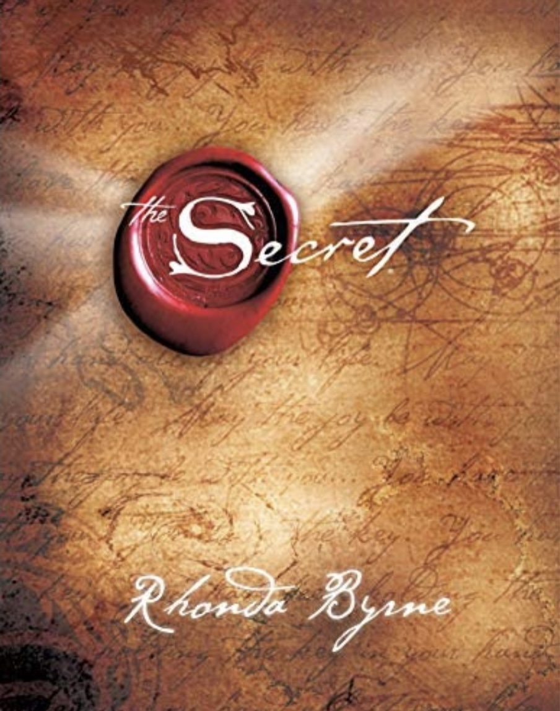
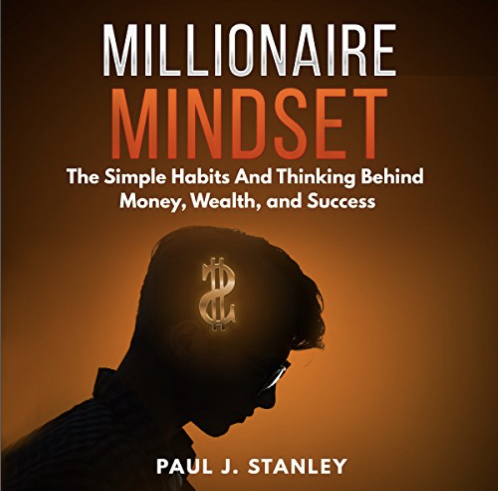

List Of books
- The Secret
- The Hate u Give
- The Power of Letting Go
- Millionaire Mindset
Welcome to Augsburg Library
“Today a reader, tomorrow a leader.” – Margaret Fuller
- Author: Rhonda Byrne
- Title: The Secret
- Copyright Date: November 2006
- Pages: 198
- Summary: The Secret is a self-help book by Rhonda Byrne that explains how
the law of attraction, which states that positive energy attracts positive things
into your life, governs your thinking and actions, and how you can use the power of
positive thinking to achieve anything you can imagine
- 
- Author: Angie Thomas
- Title: The Hate U Give
- Copyright Date: February 2017
- Pages: 444
- Summary: Sixteen-year-old Starr Carter moves between two worlds: the poor neighborhood
where she lives and the fancy suburban prep school she attends. The uneasy balance between
these worlds is shattered when Starr witnesses the fatal shooting of her childhood best friend
Khalil at the hands of a police officer.
-
- Author: John Purkiss
- Title: The Power of Letting Go
- Copyright Date: February 2020
- Pages: 200
- Summary:
In The Power of Letting Go, John Purkiss explains why we should let go and how we can
do it, using proven techniques to make things happen. The stages of letting go: Be present and
enjoy each moment. Let go of the thoughts that keep you stuck.
-

- Author: Paul J.Stanley
- Title: Millionaire Mindset
- Copyright Date: April 2018
- Pages: 230
- Summary: Written by the celebrated author and businessman T. Harv Eker, Secrets of the Millionaire
Mind describes how children of rich parents unconsciously inherit behavioral and cognitive patterns
that bind them to great wealth. This book is useful for those who want to become rich and adopt
wealth-earning habits.
- 